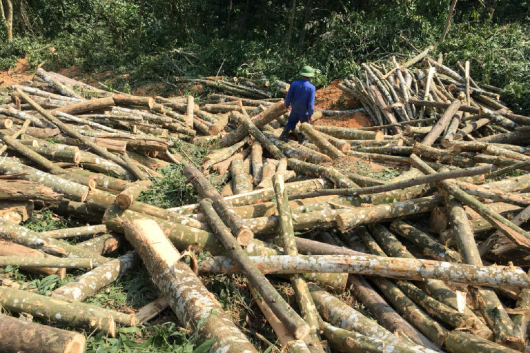
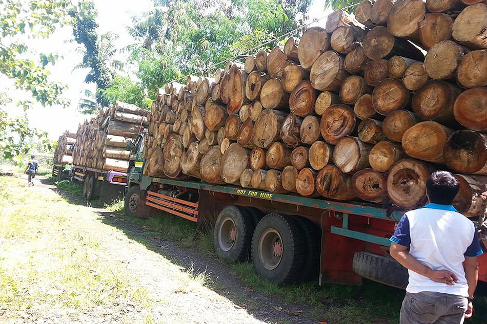

Illegal Logging

Illegal logging and related trade occurs when timber is harvested, transported, processed, bought or sold in violation of national or sub-national laws. It can also happen when forests are cleared for plantations such as oil palm. Illegal logging exists because of increasing demand for timber, paper and derivative products, including packaging.
Economic Impacts

Illegal logging not only leaves an obvious mark of destruction on forests – gaping holes where ancient trees once stood – it strips the economic livelihood of local communities and responsible companies. There’s also another cost – lost revenue that may have been generated from legal logging of forests. When trees are cut without the right permits and are smuggled abroad, governments lose out financially in several ways, including lost revenue from taxes and duties and the costs of efforts to manage illegal logging.
Timber that is logged without payment of duties and taxes pushes down the market price of timber, which acts as an incentive for other loggers to follow the same practice. This further increases losses to governments and starts a vicious cycle in the market. A study by the American Forest & Paper Association has estimated that illegal logging depresses world timber prices by between 7% and 16%, depending on the product. This causes US firms losses of at least US$460 million each year. The World Bank states that the annual global market loses US$10 billion annually from illegal logging, with governments losing an additional US$5 billion in revenues.
Social Impacts
Illegal logging threatens some of the world's most valuable forests – from the Amazon to the Russian Far East. And yet, for many of the people that live in these forests, illegal logging is a vital source of income – sometimes it is the only way to survive. But at other times it threatens their livelihood.
Increased demand for forests products has brought some financial benefits for poor people living in or near forests. But there is also evidence to show that usually, poor communities who are completely dependent on forests lose out to powerful interests, logging companies and migrant workers who reap most of the benefits.
How does this happen? Around the world, many forest-dwelling communities have little control over ownership of their land. This makes them vulnerable to outsiders who try to gain access to their forest, which may cause repression and human rights violations. Or just plain exploitation.